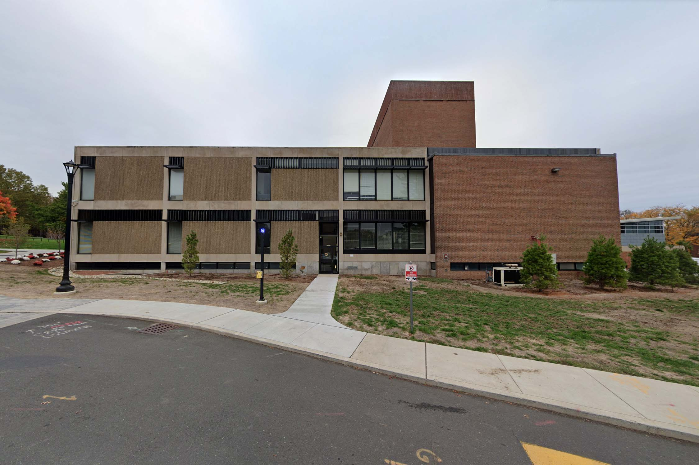

Jerome Sicard
b. 1997 Pittsburgh, PA
Jerome Sicard draws on the unique semiotic landscape of his Western Pennsylvanian home to reveal and critique the immaterial economies underlying American identity. Sicard’s narrative and research-based projects blur the lines between truth and fiction, sincerity and satire, parody and pastiche, while remaining grounded in the cultural heritage of Appalachian America.
Exhibitions
Interburden
Cielo Saucedo & Jerome Sicard
June 2023

Divine Theory
Miguel Mathias & Jerome Sicard
May - Sept 2022